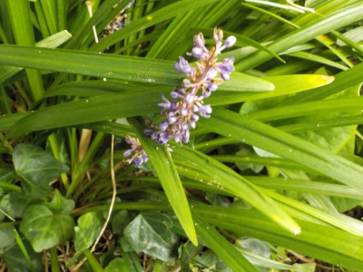
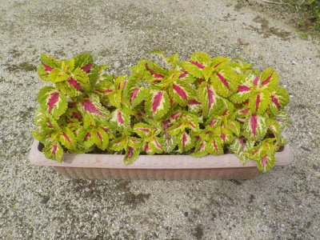
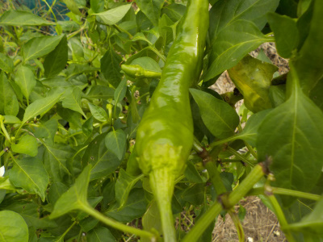
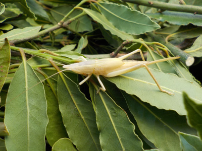
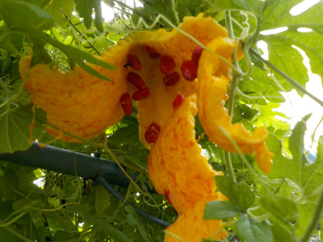

遊びで植物を育てよう
2020/09/27
画像検索で花の名前を探しました。

この花の名前が知りたかったので、植物の検索サイトで調べたんですが何か分かりませんでした。
9月 花 紫 で調べてもコレってものがありませんでした。
グーグルの画像検索で調べたら、ソクシンランが出ました。
でもソクシンランは花の時期が違う。
ソクシンラン 秋 で検索したら、ヤブランが出ました。
たぶんこの花はヤブランです。
ネットで名前を調べるのって苦労しますね。
【9月TOP】
【日記TOP】
【園芸TOP】
2020/09/22
コリユスが大きく育ちました。

挿し芽のコリユスがこんもりと大きくなりました。
これから花が咲いて、もっときれいになると思います。
【9月TOP】
【日記TOP】
【園芸TOP】
2020/09/22
シシトウを収獲しました。

今まではピーマンの収穫が多かったのでシシトウをあまり食べていませんでした。
ピーマンの量が減ったので、シシトウを採りました。
いろいろ植えると収穫時期が集中しないのでいいですね。
【9月TOP】
【日記TOP】
【園芸TOP】
2020/09/20
白いバッタが弱っていました。

白いバッタがいました。アルビノかな？
バッタにとってはもう寒いのか、寿命なのかわかりませんが、動かずにじーっとしていました。
手でつまんでも無抵抗です。
敵が来たらすぐ食べられてしまいそう。目立つし。
【9月TOP】
【日記TOP】
【園芸TOP】
2020/09/13
ゴーヤが次々爆発しています。

ゴーヤは苦いのであまり食べていません。
なので黄色く熟れて爆発しています。
たまには食べてみようかと、料理方法を検討中です。
【9月TOP】
【日記TOP】
【園芸TOP】
過去の日記
【2024年9月の日記】
【2023年9月の日記】
【2022年9月の日記】
【2021年9月の日記】
【2020年9月の日記】
【2019年9月の日記】
【2018年9月の日記】
【2017年9月の日記】
【2016年9月の日記】
【2015年9月の日記】
【2014年9月の日記】
【2013年9月の日記】
【2012年9月の日記】
【9月TOP】
【日記TOP】
【園芸TOP】
台風の季節です。
【おいしいものを食べよう。】【たくさん寝よう。】
【ソロ活をしよう!】【季節感のあることをしよう。】【動画視聴はほどほどに。】【当サイトの全てのコンテンツは無断転載禁止です。】